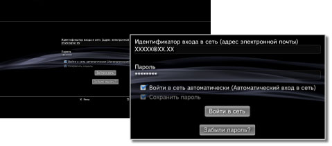

PlayStation™Network > Сохранение пароля/автоматический вход в сеть
Сохранение пароля/автоматический вход в сеть
Для использования этой функции может потребоваться обновление системного программного обеспечения.
При сохранении пароля он будет предварительно помещен в экран подписки. Если выбрана настройка автоматического входа в сеть, система PS3™ автоматически осуществит вход в PSNSM при ее включении.
Примечания
- Сохранение пароля может позволить другим пользоваться услугами PSNSM или просматривать другую информацию для учетной записи.
- Прежде чем передать свою систему PS3™ на фирменное обслуживание, обязательно отмените параметр [Сохранить пароль] на экране входа в PSNSM для всех пользователей. Это позволит предотвратить несанкционированный доступ и использование данных вашей кредитной карты и другой персональной информации.
- Прежде, чем передать систему PS3™ третьим сторонам по любой причине, включая возврат (если применимо), удалите все данные и сбросьте параметры настройки системы PS3™. Это позволит предотвратить несанкционированный доступ и использование данных вашей кредитной карты и другой персональной информации.
1. |
Выберите |
|---|---|
2. |
Введите идентификатор входа в сеть (адрес электронной почты) и пароль. |
3. |
Отметьте флажками параметры [Сохранить пароль] и [Войти в сеть автоматически (Автоматический вход в сеть)].  |
Подсказка
Если выбран параметр [Войти в сеть автоматически (Автоматический вход в сеть)], значок  (Войти в сеть) исчезает.
(Войти в сеть) исчезает.
Отмена автоматического входа в сеть
Выберите  (Управление учетной записью) в
(Управление учетной записью) в  (PlayStation™Network) и выберите в меню параметров [Автоматический вход в сеть выключен]. При включении системы PS3™ автоматический вход в сеть будет отключен.
(PlayStation™Network) и выберите в меню параметров [Автоматический вход в сеть выключен]. При включении системы PS3™ автоматический вход в сеть будет отключен.
Отмена параметра сохранения пароля (удаление пароля)
1. |
Выберите |
|---|---|
2. |
На экране ввода идентификатора входа в сеть и пароля снимите отметку в поле [Сохранить пароль]. |
Подсказки
- Если выбран автоматический вход в сеть, значок (Войти в сеть) исчезнет. В данном случае нужно сначала отменить автоматический вход в сеть.
- В случае временного отключения от сети после входа в сеть, даже если функция автоматического входа в сеть отключена, будет выполнен автоматический вход в сеть.